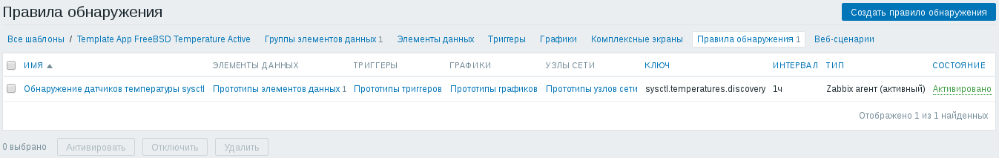
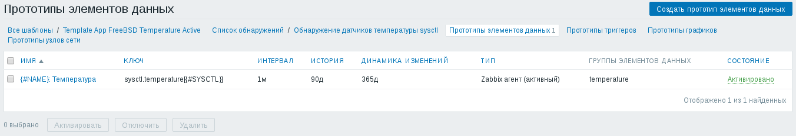
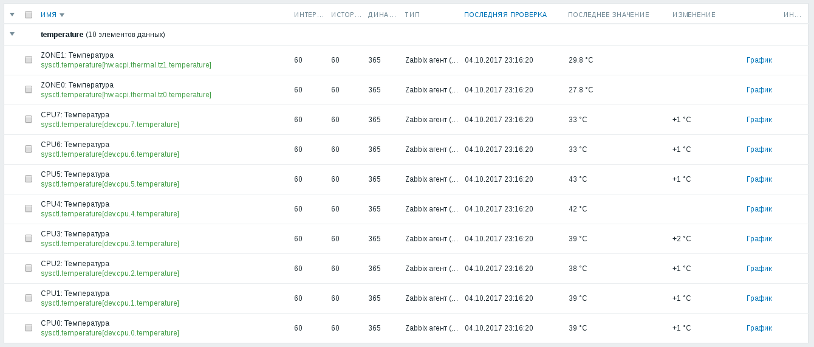

Для контроля температурного режима серверов под управлением операционной системы FreeBSD можно воспользоваться датчиками температуры, доступными по команде sysctl:
# sysctl -a | grep temperature hw.acpi.thermal.tz0.temperature: 27.8C hw.acpi.thermal.tz1.temperature: 29.8C
В выводе команды sysctl, приведённом выше, имеется два датчика температуры, находящихся в "тепловых зонах" с номерами 0 и 1. Кроме этого возможно ещё контролировать температуру процессорных ядер. Для контроля температуры процессорных ядер на процессорах Intel можно подгрузить модуль ядра операционной системы FreeBSD, который называется coretemp:
# kldload coretemp
После загрузки этого модуля добавятся датчики температуры, соответствующие ядрам процессора:
# sysctl -a | grep temperature hw.acpi.thermal.tz0.temperature: 27.8C hw.acpi.thermal.tz1.temperature: 29.8C dev.cpu.0.temperature: 43.0C dev.cpu.1.temperature: 43.0C dev.cpu.2.temperature: 38.0C dev.cpu.3.temperature: 38.0C dev.cpu.4.temperature: 41.0C dev.cpu.5.temperature: 41.0C dev.cpu.6.temperature: 32.0C dev.cpu.7.temperature: 32.0C
В данном случае у процессора всего четыре ядра, но каждое из них поддерживает так называемый гипертрединг (общепринятое слово "гипертрейдинг" ассоциируется у меня с торговлей в четрырёхмерном пространстве - hyper-trading) - возможность выполнять два независимых потока инструкций, используя общие вычислительные устройства ядра (грубо говоря, в ядре процессора есть два регистровых файла, два устройства управления, но одно арифметико-логическое устройство). Это хорошо видно по тому, что показания каждой из четырёх пар датчиков - одинаковые.
Чтобы модуль ядра загружался при загрузке операционной системы автоматически, нужно прописать соответствующую опцию в файл конфигурации загрузчика ядра /boot/loader.conf:
coretemp_load="YES"
Для процессоров AMD имеется соответствующий модуль под названием amdtemp. У меня, однако, таких процессоров нигде нет, поэтому описанное ниже будет относиться только к процессорам Intel.
Чтобы следить за показаниями датчиков температуры через систему мониторинга Zabbix, на наблюдаемом узле должен быть установлен и настроен Zabbix-агент. Добавим в файл конфигурации Zabbix-агента /usr/local/etc/zabbix24/zabbix_agentd.conf две строчки:
UserParameter=sysctl.temperatures.discovery,/sbin/sysctl -N dev.cpu hw.acpi.thermal 2>/dev/null | awk 'BEGIN { printf "{\"data\":["; first=1; } /\.temperature$/ { name=$0; gsub("dev.cpu.", "CPU", name); gsub(".temperature", "", name); gsub("hw.acpi.thermal.tz", "ZONE", name); if (first) first=0; else printf ","; printf "{\"{#SYSCTL}\":\"%s\",\"{#NAME}\":\"%s\"}", $0, name; } END { print "]}"; }'
UserParameter=sysctl.temperature[*],/sbin/sysctl -n $1 | sed 's/C$//'
Чтобы новые настройки вступили в силу, перезапустим Zabbix-агента при помощи следующей команды:
# /usr/local/etc/rc.d/zabbix_agentd restart
Для контроля показаний датчиков температуры команды sysctl я подготовил два шаблона:
В шаблоне имеется одно правило обнаружения датчиков:
В этом правиле обнаружения есть один прототип элемента данных:
Добавлять в шаблон триггеры я не стал, т.к. во-первых пороги для "тепловых зон" и для процессорных ядер наверняка будут отличаться друг от друга, во-вторых - пороги будут зависеть от температурного режима серверной и в-третьих, пороги будут зависеть от типовой нагрузки. Например, на абсолютно одинаковых серверах, расположенных в разных серверных, я наблюдал разброс температур процессорных ядер от 32 до 45 градусов Цельсия. Под нагрузкой процессорные ядра разогреваются до 66 градусов Цельсия. Поэтому, если вам нужны пороги по этим датчикам, то добавьте в шаблон триггеры самостоятельно.
Снимаемые данные выглядят следующим образом:
